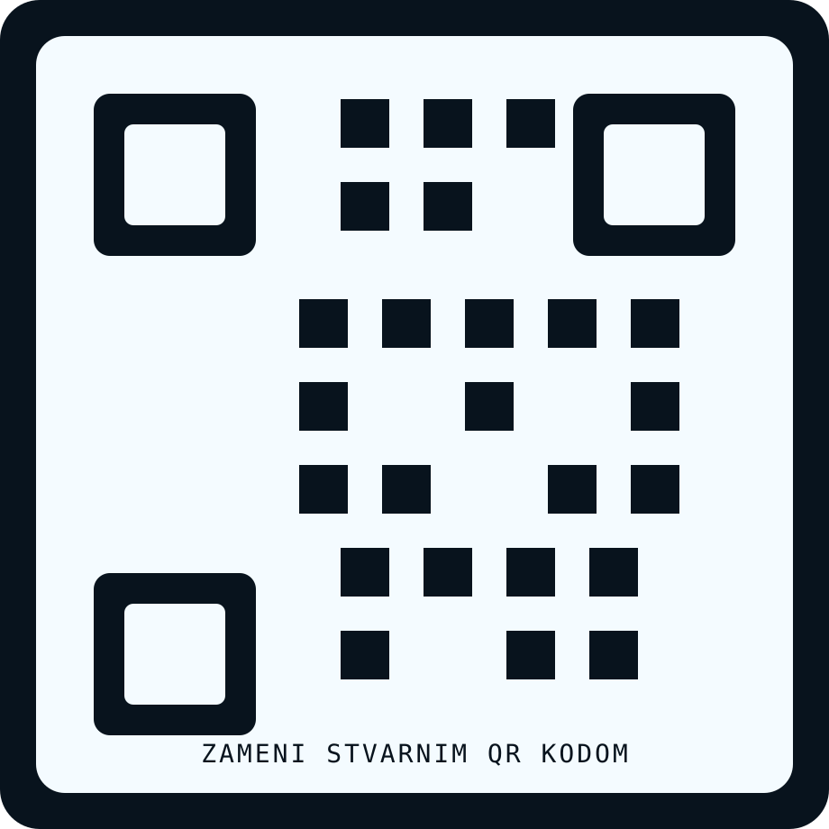

Lab scenariji, enumeracija, mrežni uvid i validacija nalaza.
Junior Cybersecurity / Penetration Tester
Praktičan sigurnosni rad, jasna tehnička osnova i dokaziv portfolio.
Boris Lahoš je student završne godine računarstva i automatike (PRNI), fokusiran na cybersecurity i penetration testing. Portfolio je postavljen kao ozbiljan pregled praktičnog rada: lab okruženja, mrežna analiza, SQL i backend osnova, CTF takmičenja i community angažman koji potvrđuju kontinuitet učenja.
Završna godina PRNI
Novi Sad, Serbia
Lab i CTF praksa
Security rad oslanjam na razumevanje infrastrukture, ne samo alata.
Svaka bitna sekcija ima prostor za screenshotove, linkove i reference.
O meni
Cybersecurity fokus izgrađen na praktičnom radu i široj tehničkoj osnovi.
Najviše me zanima rad u kontrolisanim okruženjima u kojima mogu da razumem kako sistem funkcioniše, kako izgleda površina napada i kako se nalaz proverava pre nego što se predstavi kao validan. Pored sigurnosti, razvijam i širu osnovu kroz mreže, operativne sisteme, baze podataka, backend logiku i osnove AI alata koji mi pomažu u istraživanju i bržoj analizi.
Student sam završne godine računarstva i automatike (PRNI), sa fokusom na cybersecurity i penetration testing. Najveću vrednost vidim u radu koji je praktičan, ponovljiv i tehnički argumentovan: postavljanje lab okruženja, mapiranje servisa, analiza mrežnog saobraćaja, razumevanje osnova web i sistemske bezbednosti, kao i dokumentovanje nalaza bez preterivanja i bez oslanjanja samo na automatizovane alate.
Kroz sopstvene projekte i CTF aktivnosti razvijam disciplinu da bezbednosni problem razložim na korake: šta je površina napada, koji su signali u mreži i sistemu, šta alat pokazuje, a šta mora ručno da se potvrdi. Takav pristup mi je važan zato što želim da budem inženjer koji razume uzrok i kontekst nalaza, a ne samo njegov rezultat.
Van striktno security domena, gradim i stabilnu osnovu iz mreža, sistema, baza podataka, SQL-a, backend razvoja, Git workflow-a i osnova AI alata. To mi pomaže da sigurnost posmatram kao deo realnog sistema, a ne kao izdvojenu temu. Rado učim, brzo ulazim u novu dokumentaciju i najbolje napredujem kada mogu da testiram, upoređujem i beležim rezultate kroz konkretan rad.
Prvo razumem kontekst sistema, zatim enumerišem, testiram i beležim nalaze tako da budu proverljivi.
Security mi je fokus, ali oslonac dolazi iz šireg inženjerskog razumevanja.
Tražim okruženje u kome mogu da doprinosim kroz praktičan rad, jasnu dokumentaciju i kontinuirano učenje.
Detaljne veštine
Veštine su predstavljene kroz rad, ne samo kroz spisak tehnologija.
Sekcija je strukturisana po oblastima koje direktno podržavaju cybersecurity putanju: od mrežne osnove i Linux okruženja, do SQL modelovanja i načina na koji koristim AI alate kao pomoć, a ne zamenu za proveru.
Projekti i lab rad
Praktični rad sa jasnim dokazima, alatima i naučenim lekcijama.
Projekti su prikazani kao tehnički slučajevi. Svaki sadrži opis problema, korišćene tehnologije, dokazne slike i linkove koje kasnije možeš direktno dopuniti.
CTF takmičenja
Takmičenja potvrđuju rad pod pritiskom i kontinuirano praktično učenje.
CTF sekcija je postavljena kao profesionalna validacija interesovanja za security: web, exploitation, cryptography i networking zadaci u vremenski ograničenom formatu.
Volontiranje i community
Kredibilitet ne dolazi samo iz projekata, već i iz angažmana u zajednici.
Ova sekcija spaja tehničku i profesionalnu stranu profila: događaji, organizaciona podrška, komunikacija sa ljudima i rad u timu pod realnim rokovima.
Obrazovanje
Akademska osnova koja direktno podržava bezbednosni smer.
Ovde je cilj da se jasno vidi formalna osnova, ali i to kako je prevodim u praktičan rad kroz laboratorijske scenarije, projekte i takmičenja.
Računarstvo i automatika (PRNI)
Fokus mi je na predmetima i oblastima koje grade dobru security osnovu: računarske mreže, operativni sistemi, baze podataka, softversko inženjerstvo, backend logika i razumevanje arhitekture sistema.
Tehnička širina iza security fokusa
Kombinacija ovih oblasti mi omogućava da sigurnosne probleme posmatram u širem kontekstu sistema, aplikacije i infrastrukture. Posebno mi je važna mrežna osnova: topologije, simulacija mreže, konfiguraciona logika i razumevanje komunikacije između uređaja i servisa.
Elektrotehnička škola „Mihajlo Pupin“, Novi Sad
Kroz srednjoškolski smer stekao sam formalnu osnovu iz računarskih mreža, mrežnih uređaja i praktičnog razumevanja infrastrukture. Tu sam radio sa Cisco Packet Tracer-om, mrežnim topologijama, IP adresiranjem, subnetting-om, osnovama rutiranja i svičovanja, kao i sa mrežnom logikom koja mi je danas važna i u cybersecurity kontekstu.
Ova baza mi je značajna zato što security zadatke ne posmatram odvojeno od mreže, već kroz razumevanje komunikacije, servisa, segmentacije i ponašanja sistema u realnom okruženju.
Kontakt
Otvoren za razgovor o praksi, junior ulozi i security projektima.
Ako tražiš kandidata koji gradi security osnovu kroz realan rad, dokumentovane dokaze i stabilan inženjerski pristup, slobodno se javi.
Za CV, profesionalni kontekst i direktan kontakt.
Za pregled koda, repozitorijuma i tehničkog rada.
CV i QR
Stranica je pripremljena za upotrebu iz CV-ja, preko direktnog linka ili QR koda.
Ovaj blok služi kao brza ruta do CV-ja, GitHub-a i LinkedIn-a, uz jasno mesto za QR sliku koja vodi na portfolio.
Brz pristup ključnim referencama
CV može da sadrži QR kod koji vodi direktno na ovaj portfolio, čime regruter dobija dublji kontekst, dokaze i linkove.

Zameni placeholder svojim stvarnim QR kodom koji vodi na deploy-ovanu verziju portfolio sajta.